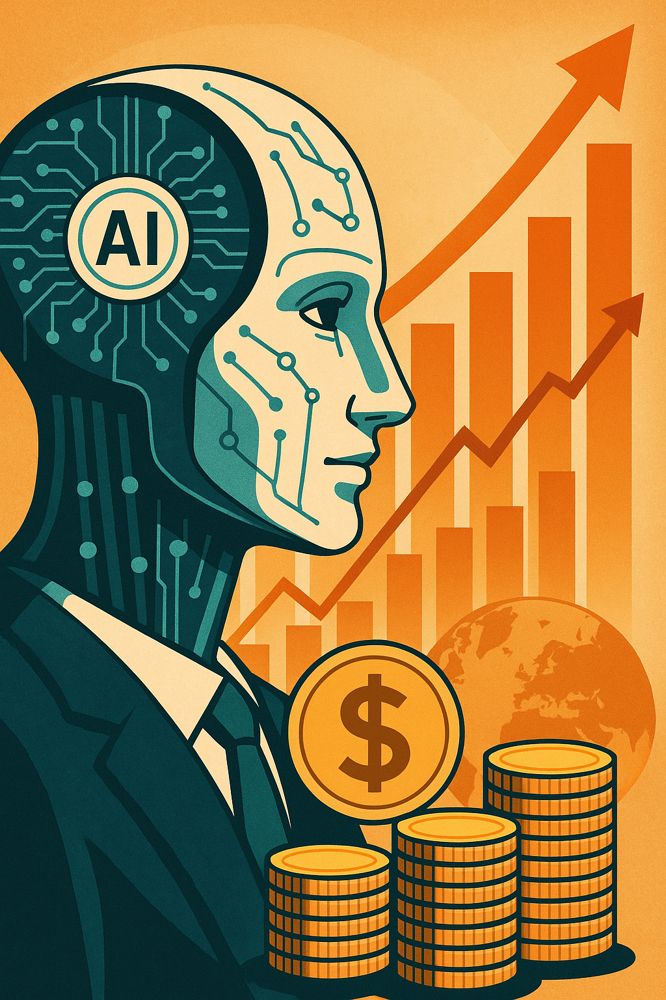
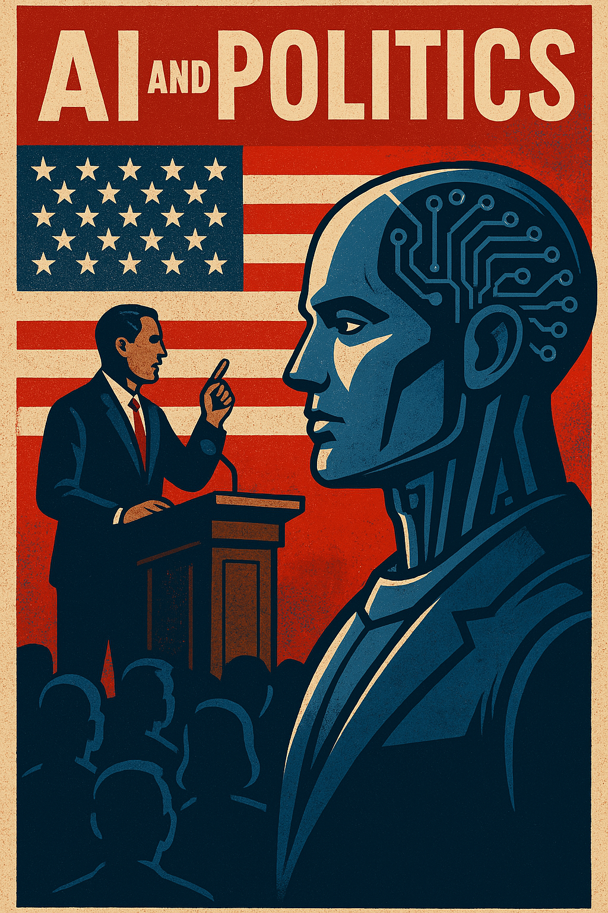
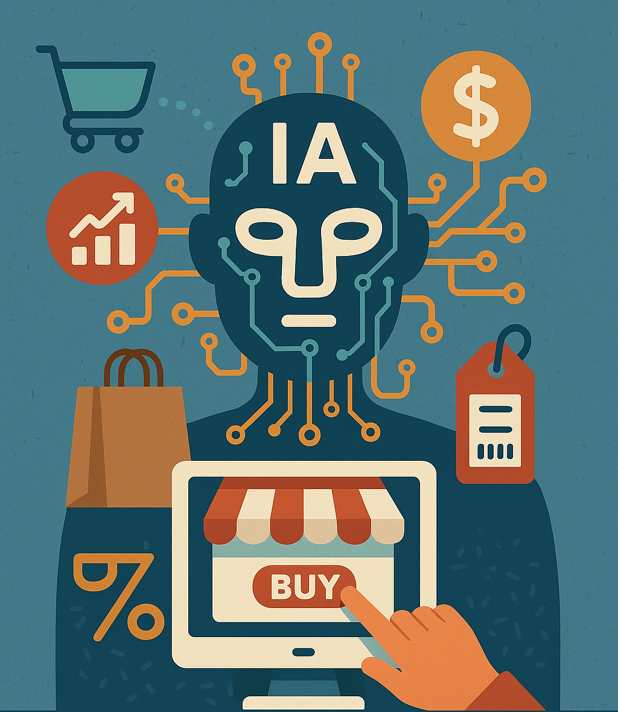

La Inteligencia Artificial: Un Motor de Cambio
La Inteligencia Artificial (IA) ha emergido como una fuerza transformadora con un impacto creciente y significativo en diversos pilares de la sociedad moderna. Su capacidad para procesar grandes volúmenes de datos, aprender patrones complejos y tomar decisiones autónomas está redefiniendo la economía, la política y el comercio a un ritmo sin precedentes.
Impacto en la Economía
En el ámbito económico, la IA se está convirtiendo en un motor clave para la eficiencia y la productividad. La automatización de tareas repetitivas y la optimización de procesos mediante algoritmos inteligentes están permitiendo a las empresas reducir costes, mejorar la calidad y aumentar la producción. Sectores como la manufactura, la logística y las finanzas están experimentando una profunda transformación gracias a la IA. Además, la IA está impulsando la innovación y la creación de nuevos productos y servicios. Desde asistentes virtuales y chatbots hasta sistemas de recomendación personalizados y vehículos autónomos, la IA está abriendo un abanico de posibilidades que antes eran inimaginables. Esto, a su vez, está generando nuevos modelos de negocio y transformando la forma en que las empresas interactúan con sus clientes. Sin embargo, la adopción generalizada de la IA también plantea desafíos importantes. La automatización podría desplazar a trabajadores en ciertos sectores, lo que requiere una adaptación de la fuerza laboral a través de la formación y la reconversión profesional. Asimismo, la concentración de poder en manos de las empresas líderes en IA y las posibles desigualdades en el acceso a esta tecnología son aspectos que deben abordarse para garantizar un desarrollo económico inclusivo y equitativo.
Impacto en la Política:
En el ámbito político, la IA ofrece herramientas poderosas para el análisis de datos, la predicción de tendencias y la optimización de la toma de decisiones. Los gobiernos pueden utilizar la IA para mejorar la eficiencia de los servicios públicos, personalizar las políticas y comprender mejor las necesidades de los ciudadanos. La IA también puede ser utilizada en procesos electorales para analizar el sentimiento público y optimizar las campañas. No obstante, la aplicación de la IA en la política también conlleva riesgos significativos. La proliferación de deepfakes y la desinformación generada por IA pueden erosionar la confianza pública y manipular la opinión. Los algoritmos sesgados pueden perpetuar o incluso amplificar las desigualdades sociales. Además, la recopilación y el análisis masivo de datos personales por parte de entidades gubernamentales plantea serias preocupaciones sobre la privacidad y las libertades civiles. Es crucial establecer marcos éticos y рrincipios sólidos para garantizar que la IA se utilice en la política de manera responsable y transparente, fortaleciendo la democracia en lugar de socavarla.
Impacto en el Comercio
En el sector comercial, la IA está revolucionando la forma en que las empresas interactúan con los consumidores y gestionan sus operaciones. Los sistemas de recomendación basados en IA, los chatbots de atención al cliente y la publicidad personalizada están mejorando la experiencia de compra y aumentando la fidelidad de los clientes. La IA también está optimizando la gestión de inventarios, la logística y la cadena de suministro, lo que se traduce en una mayor eficiencia y una reducción de costes. El comercio electrónico se está viendo particularmente transformado por la IA. Las tiendas virtuales están utilizando la IA para ofrecer experiencias de compra más inmersivas y personalizadas, llegando incluso a predecir las necesidades de los consumidores antes de que estos las expresen. La IA también está facilitando el comercio transfronterizo y la expansión a nuevos mercados. Sin embargo, al igual que en otros ámbitos, la adopción de la IA en el comercio plantea desafíos. La necesidad de proteger los datos de los consumidores y garantizar la transparencia en el uso de algoritmos son aspectos cruciales. Además, es importante considerar el impacto de la automatización en los empleos del sector minorista y desarrollar estrategias para mitigar posibles efectos negativos.
Conclusión
La Inteligencia Artificial es una tecnología con un potencial enorme para generar beneficios significativos en la economía, la política y el comercio. Sin embargo, su desarrollo y aplicación deben abordarse con cautela y responsabilidad. Es fundamental establecer marcos éticos y регуляторios que promuevan un uso justo, transparente y seguro de la IA, maximizando sus beneficios y minimizando sus riesgos. La colaboración entre gobiernos, empresas, investigadores y la sociedad en general será clave para navegar este futuro impulsado por la IA y asegurar que su impacto sea positivo y equitativo para todos.